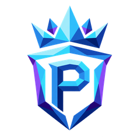

Estuda e trabalha dentro da PRONEX
Uma conta, duas secções. As abas no topo estão em todos os ecrãs: mudas de secção ou voltas aqui quando quiseres.

Uma conta, duas secções. As abas no topo estão em todos os ecrãs: mudas de secção ou voltas aqui quando quiseres.